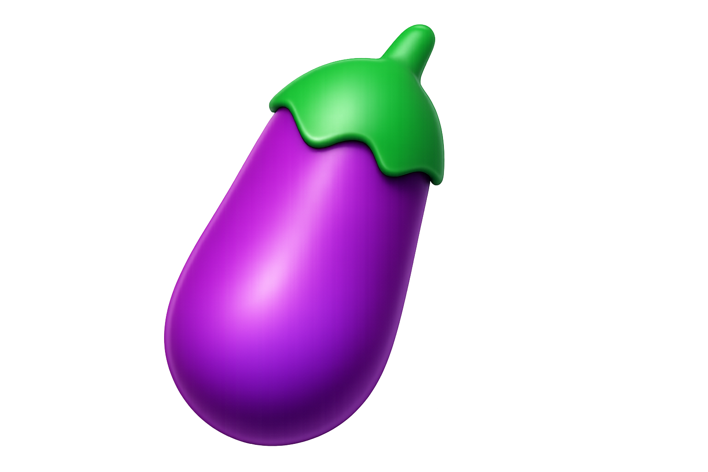
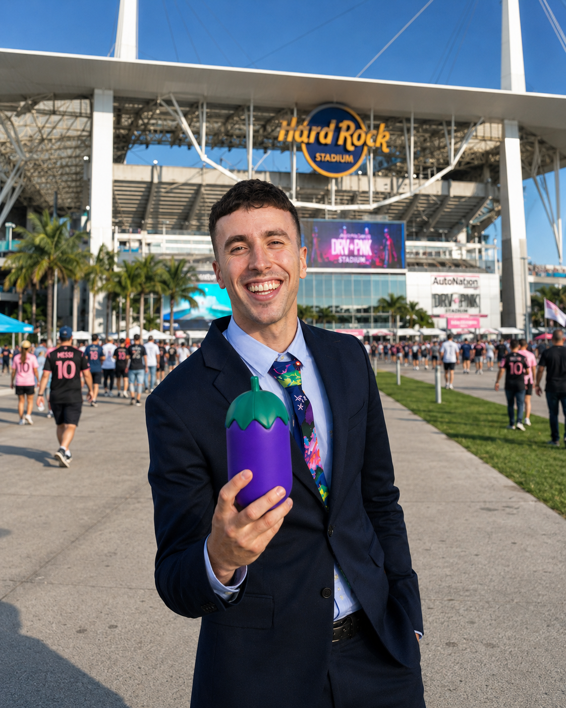
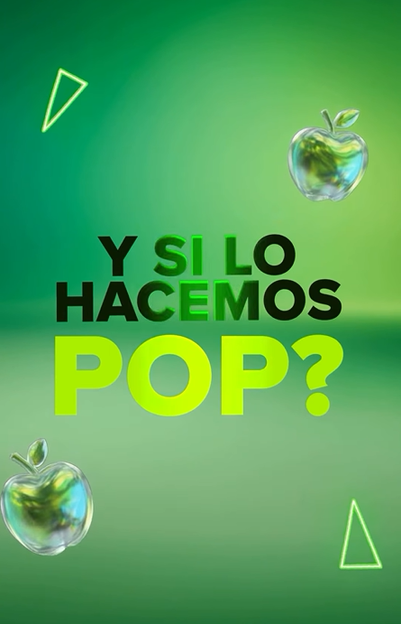
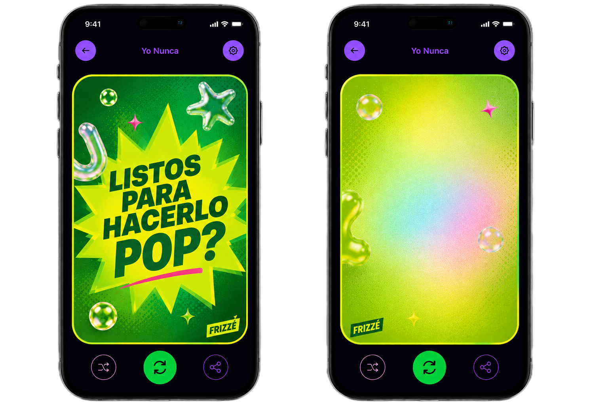
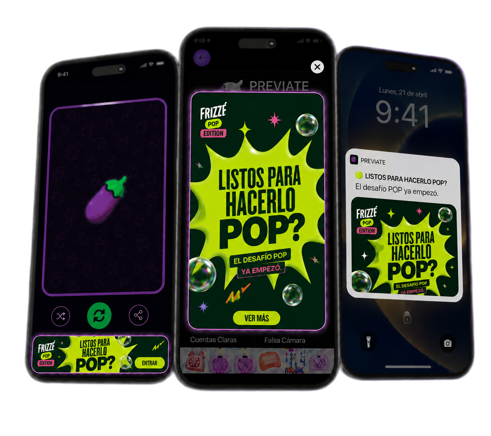
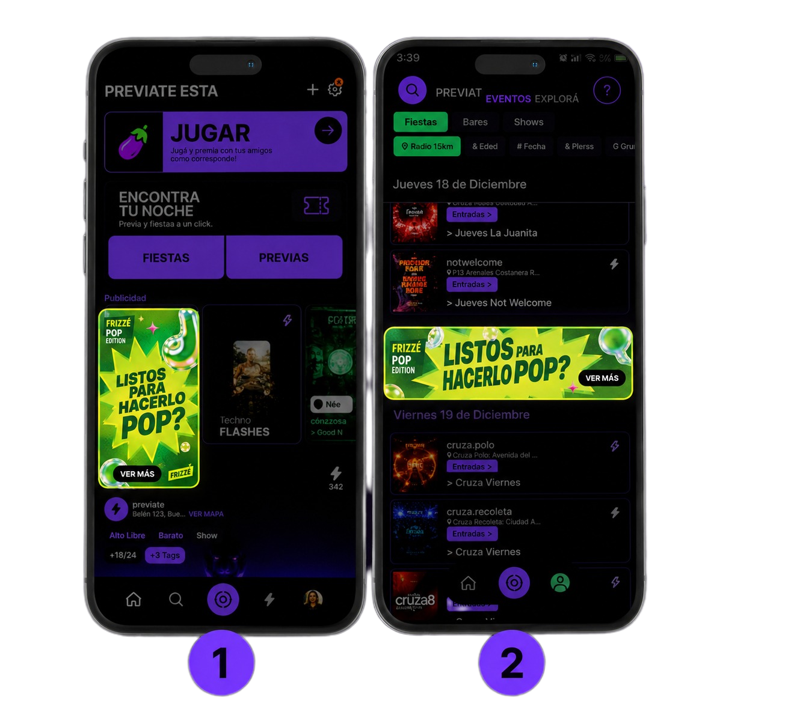
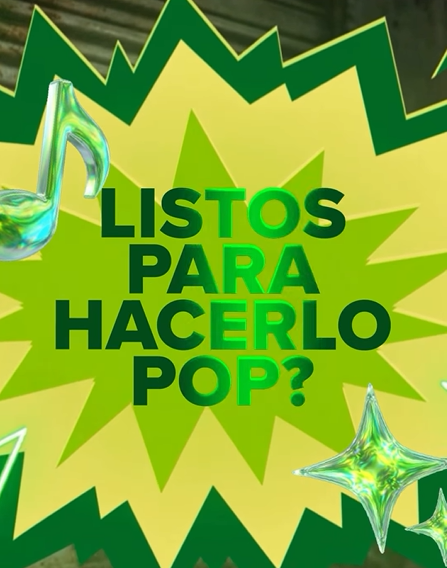

00 · Mundial 2026 · Estados Unidos
FRIZZE x
PREVIATE ESTA
El Mundial se juega en la cancha…
y en la previa.
Durante el Mundial, Previate Esta se activa donde sucede la experiencia: en las previas, en la calle y en los encuentros entre hinchas.
Leo viajará a Estados Unidos para acompañar a la Selección Argentina y generar contenido en tiempo real junto al público, integrando a Frizze de manera natural, divertida y alineada a #HaceloPOP.

#HaceloPOP
01 · Comunidad
Una comunidad que ya vive la previa
Previate Esta conecta con una audiencia joven que organiza planes, juega, sale y comparte experiencias.
Para Frizze, la oportunidad está en integrarse en esos momentos reales de encuentro, donde el Mundial potencia emoción, participación y contenido.
02 · Modo Mundial
Leo estará donde empieza el clima de partido
Durante el Mundial, Leo estará en Estados Unidos cubriendo el clima previo a los partidos de Argentina.
La cobertura se apoya en encuentros reales con hinchas, consignas rápidas y momentos pensados para redes.
Cobertura10 de junio al 22 de julio
LocaciónEstados Unidos
FocoHinchas, previas y puntos de encuentro

03 · Cómo se vive el contenido
Cómo se vive el contenido
La cobertura se construye desde el encuentro con el público. Leo propone dinámicas simples, conversa con hinchas y genera situaciones pensadas para redes.
Bloque 1 · Contenidos con Leo
Ideas de contenido
A partir del concepto #HaceloPOP, se plantean dinámicas simples y participativas para activar a Frizze junto a Leo en la previa del Mundial.
IDEA 1
Cantitos de cancha, versión pop
Leo invita a los hinchas a reinterpretar canciones clásicas de cancha bajo el código de Frizze: más actitud, más humor y más pop.
Leo propone el desafío, el grupo reversiona un cantito y las versiones más creativas ganan premios.
#HaceloPOP entra en el lenguaje del Mundial con humor, participación y potencial viral.
Quienes participan de los videos reciben un trago con Frizze Manzana.

IDEA 2
POP o NO POP
Leo presenta situaciones del Mundial, la previa o la vida cotidiana. Los participantes deciden si son POP o NO POP y justifican la respuesta.
Una dinámica flexible, simple y fácil de adaptar a distintos contextos mundialistas.
Quienes participan de los videos reciben un trago con Frizze Manzana.
Llegar con cotillón
Usar camiseta retro
Cantar sin saber la letra
Festejar antes de que entre
Ir sin entrada solo por vivir el clima
 más pop
más pop
IDEA 3
El jugador más POP del Mundial
Leo pregunta a los hinchas quién es el jugador más POP del Mundial y por qué.
La respuesta puede ser por look, personalidad, festejo, redes o actitud. Las más divertidas pueden ganar premios Frizze.
Conecta fútbol, cultura pop y conversación social con presencia natural de Frizze.
Quienes participan de los videos reciben un trago con Frizze Manzana.
04 · Dónde sucede
Inmediaciones de estadios
Durante el Mundial, Previate Esta se activa en las inmediaciones de los estadios, capturando el clima previo a los partidos junto a los hinchas argentinos que acompañan a la Selección.
Leo activa entrevistas, juegos y consignas breves con el público para capturar el clima previo al partido.
- Inmediaciones de estadios
- Hinchas argentinos
- Cobertura en Estados Unidos
- 10 de junio al 22 de julio
05 · Formatos
1 dinámica incluye
Cada dinámica contempla una producción de contenido pensada para amplificar la acción en redes.
+
+
06 · Integración In-App
Integración In-App
Además de los contenidos con Leo durante el Mundial, Frizze puede tener presencia dentro de la app de Previate Esta.
La marca se integra en juegos, pantallas y formatos nativos pensados para acompañar la experiencia de previa.
In-App · Juegos
Frizze dentro del juego
Intervenimos el contenido de la app para que Frizze pueda formar parte de los juegos, en este caso en formato de cartas, siendo parte de la conversación activa de la previa.

In-App · Formatos de presencia
Formatos In-App
Cada formato tiene una función concreta dentro de la app: activar el juego, acompañar la navegación o destacar presencia de marca.


07 · Presupuesto
Escenarios de activación
Los combos combinan contenidos con Leo durante el Mundial + presencia In-App dentro de Previate Esta.
1 contenido + In-App
$13.000.000Goal 1.250.000 impresiones in-app
KPI's Previate CTR 0.70% · VW 80%
Formatos ITT 320x480px · Header 180x240px · Zócalo 320x50px · Nativo 420x110px
Sponsor juego Yo Nunca
Duración 1 mes
3 contenidos + In-App
$18.700.000Goal 1.250.000 impresiones in-app
KPI's Previate CTR 0.70% · VW 80%
Formatos ITT 320x480px · Header 180x240px · Zócalo 320x50px · Nativo 420x110px
Sponsor juego Yo Nunca
Duración 1 mes
5 contenidos + In-App
$22.500.000Goal 1.250.000 impresiones in-app
KPI's Previate CTR 0.70% · VW 80%
Formatos ITT 320x480px · Header 180x240px · Zócalo 320x50px · Nativo 420x110px
Sponsor juego Yo Nunca
Duración 1 mes

FRIZZE x PREVIATE ESTA
Muchas gracias.
#HaceloPOP · Mundial 2026 · Estados Unidos